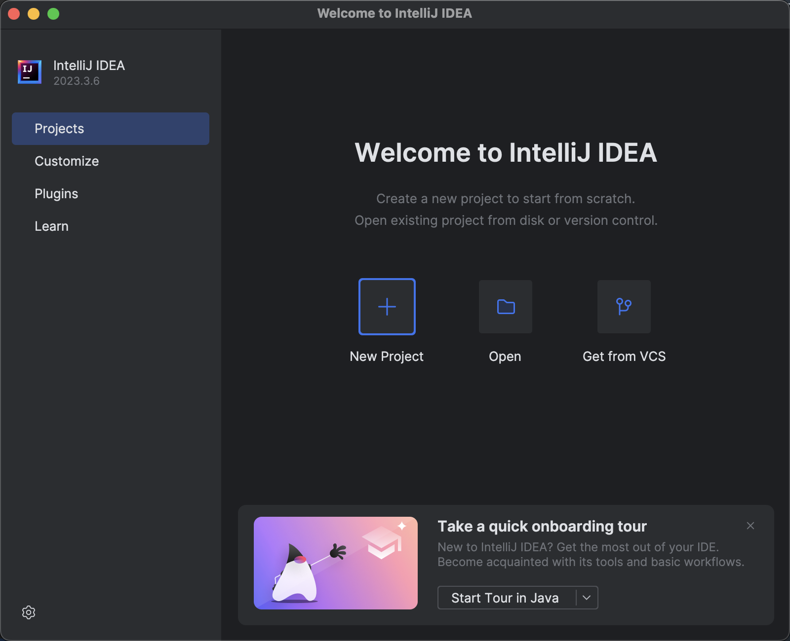

<!DOCTYPE HTML>
<html>
<head><meta name="generator" content="Hexo 3.9.0">
  <!-- hexo-inject:begin --><!-- hexo-inject:end --><meta charset="utf-8">
  <meta http-equiv="X-UA-Compatible" content="IE=edge">
  <meta name="apple-mobile-web-app-capable" content="yes">
  <meta name="apple-mobile-web-app-status-bar-style" content="black">
  <meta name="google-site-verification" content>
  
  <title>上手 Java</title>
  <meta name="author" content="chpwang">
   <meta name="description" content="王哈哈的修行驿站">
  

  <meta property="og:title" content="上手 Java">
  <meta name="viewport" content="width=device-width, initial-scale=1, maximum-scale=1">
  <meta property="og:site_name" content="行侠何须仗名剑">
 <meta property="og:image" content>
  
  <link href="/apple-touch-icon-precomposed.png" sizes="180x180" rel="apple-touch-icon-precomposed">
  <link rel="alternate" href="/atom.xml" title="行侠何须仗名剑" type="application/atom+xml">
  <!-- link rel="stylesheet" href="//cdn.bootcss.com/bootstrap/3.3.6/css/bootstrap.min.css" -->
  <!-- link rel="stylesheet" href="//cdn.bootcss.com/font-awesome/4.5.0/css/font-awesome.min.css" -->
  <!-- 把 bootstrap 3.3.6 本地化，免得连不上它的服务器，相关文件放在了 pln/source/bootstrap 里-->
  <link rel="stylesheet" href="/css/bootstrap/css/bootstrap.min.css">
  <!-- 把 font-awesome 4.5.0 本地化，免得连不上它的服务器，相关文件放在了 pln/source/font-awesome 里 -->
  <link rel="stylesheet" href="/css/font-awesome/css/font-awesome.min.css">
  <!-- highlight.js代码高亮主题 css 引入-->
  <link rel="stylesheet" href="/css/highlight/styles/vs2015.css">
  <!-- highlight.js代码高亮主题 css 引入-->
  <link rel="stylesheet" href="/css/m.min.css">
  <!--link rel="icon" type="image/x-icon" href="/favicon.ico"-->
  <link rel="icon" type="image/x-icon" href="/G.png"><!-- hexo-inject:begin --><!-- hexo-inject:end -->
</head>
</html>
<body>
  <!-- hexo-inject:begin --><!-- hexo-inject:end --><div id="main">
    <div class="behind">
      <div class="back">
        <a href="/" class="black-color"><i class="fa fa-times" aria-hidden="true"></i></a>
      </div>
      <div class="description">
        &nbsp;
      </div>
    </div>
    <div class="container">
      

  <article class="standard post">
    <div class="title">
      
  
    <h1 class="page-title center">
        上手 Java
    </h1>
  


    </div>
    <div class="meta center">
      
<time datetime="2024-03-23T03:07:28.000Z">
  <i class="fa fa-calendar"></i>&nbsp;
  2024-03-23
</time>


    
    &nbsp;
    <i class="fa fa-tag"></i>&nbsp;
    <a href="/tags/Programming-Language/">Programming Language</a>


    </div>
    <hr>
    <div class="picture-container">
      
    </div>
    <p><a href="https://www.java.com" target="_blank" rel="noopener">Java</a> 是一门非常成熟的工业级静态类型语言。对于新手来说，它是入门了解「<strong>静态类型系统</strong>」的绝佳语言之一。</p>
<p>所谓<a href="https://en.wikipedia.org/wiki/Type_system" target="_blank" rel="noopener"><strong>类型系统</strong></a>，就是对程序中各数据的类型进行<strong>严格规范</strong>的一种语言特性。可以无需运行就能通过类型不匹配提前发现问题，保证代码可靠性。也因为编译后的程序不用每次都询问一下数据的类型而减小了开销，提高程序性能。</p>
<hr>
<h3 id="Java-编程环境"><a href="#Java-编程环境" class="headerlink" title="Java 编程环境"></a>Java 编程环境</h3><p><a href="https://www.java.com" target="_blank" rel="noopener">Java</a> 是一个需要<strong>编译</strong>才能运行的语言，不像其他一些语言那样 <code>.py</code> <code>.js</code> 等文件写好了直接就能运行。在学习和开发的时候，最好能打开一个命令行窗口（Ternimal），进行相关操作才比较方便。</p>
<ul>
<li><p>安装 <strong>JDK</strong><br><a href="https://www.oracle.com/hk/java/technologies/downloads/#jdk22-mac" target="_blank" rel="noopener">JDK</a>（Java Development Kit）是用于开发 Java 应用程序的软件包，提供了运行 Java 代码所需的工具和库，比如编译器（javac）。通过 <a href="https://formulae.brew.sh/formula/openjdk" target="_blank" rel="noopener">Hombrew</a> 来安装。完成后就可以在终端命令行里使用 <code>java</code> 和 <code>javac</code> 了：</p>
<pre><code class="lang-bash">## 东西比较多，注意保持网络通畅
$ brew install openjdk

## brew install java
## 安装的是由 Apple 或者 Apple 授权的 Java 版本，通常是 Oracle JDK

## brew install openjdk 
## 安装的是由 OpenJDK 项目提供的开源 Java 版本，与 Oracle JDK 功能上是兼容的
## 不同的是 OpenJDK 是由社区维护的

## 安装完成之后，应该要能用这个命令查看 Java 的版本
$ java --version
openjdk 21.0.2 2024-01-16
OpenJDK Runtime Environment Homebrew (build 21.0.2)
OpenJDK 64-Bit Server VM Homebrew (build 21.0.2, mixed mode, sharing)
</code></pre>
<p><code>Tips：新手推荐在下文 IntelliJ IDEA 的 onboarding tour 教学过程中安装 JDK，省去各种复杂的配置</code></p>
</li>
<li><p>安装 <strong>IntelliJ IDEA</strong><br><a href="https://www.jetbrains.com/idea/download/" target="_blank" rel="noopener">IntelliJ IDEA</a> 是 <a href="https://www.jetbrains.com" target="_blank" rel="noopener">JetBrains</a> 公司推出的集成开发环境（IDE）。对 <strong>Java</strong> 编程来说，使用上比 <a href="https://code.visualstudio.com" target="_blank" rel="noopener">VS Code</a> 更加方便一些。对于初学者，下载安装 <strong>IntelliJ IDEA Community Edition</strong> 这个<strong>免费的</strong>版本就够用了。</p>
<p></p>
<p>可以看到，<strong>IntelliJ IDEA</strong> 有极其友好的 onboarding 入门教程。点击 <strong>Start Tour in Java</strong> 试试吧。<br>这个 <strong>Quick onbording tour</strong> 的过程还可以根据提示，非常方便地安装 <strong>JDK</strong></p>
</li>
</ul>
<hr>
<h3 id="开始编程"><a href="#开始编程" class="headerlink" title="开始编程"></a>开始编程</h3><p>先来简单地走一遍完整流程，了解一下整个 Java 编程作业的大体过程。</p>
<ul>
<li><p><strong>新建 <code>.java</code> 文件：</strong></p>
<pre><code class="lang-bash">  ## 打开 Terminal，进入到要进行编程的目录
  $ cd ~/Documents/prog

  ## 创建新的工作目录
  $ mkdir lesson9
  $ cd lesson9/

  ## 在这个目录下建立一个 .java 文件
  ## 注意这里文件名第一个字母要大写，因为后续文件里要写一个类 class Lesson9
  $ touch Lesson9.java
</code></pre>
<p>  对代码的分散管理是 Java 的特点。这也导致了 Java 编程的过程中会产生很多文件。所以通常会建立一个工作目录来进行作业。这里 <code>.java</code> 文件的名字是有命名规则要求的，这是 Java 语言的一个规范：</p>
<ol>
<li>若文件中有公共类 <code>public class</code> ，则文件名<strong>必须</strong>和该类的名字一样，一个文件<strong>只能有一个</strong>公共类；</li>
<li>若无公共类，则文件名无要求，但最好用易理解可维护的名字，如此处用代表性类的名字 <code>Lesson9</code>；</li>
</ol>
</li>
<li><p><strong>编辑上述文件写入 <code>Java</code> 代码：</strong></p>
<pre><code class="lang-Java">  // Lesson9.java 
  class Lesson9
  {
    public static void main(String[] args)
    {
      System.out.println(&quot;Magnifique！&quot;);
    }
  }
</code></pre>
<p>  <strong>Lesson9.java</strong> 文件里定义了一个类 <code>Lesson9</code> 。类里则定义了一个函数 <code>main</code> 。该函数接收一个参数 <code>args</code> 。其中 <code>String[]</code> 标记了参数 <code>args</code> 的类型。它是一个存储字符串对象的<strong>数组类型</strong>。<code>void</code> 代表这个函数没有返回值，也可以认为该函数的返回类型是 <strong>void</strong> 。<strong>main</strong> 函数里是个打印语句，打印出字符串 <code>&quot;Magnifique&quot;</code>。</p>
<p>  <code>public</code> 表示 <strong>main</strong> 函数在 <strong>Lesson9</strong> 这个类的外面也可以被访问和调用。与之相对的是 <code>private</code> ，表示只能在类内部才能访问调用这个函数。如果两者都没有，那这个函数就有<strong>另外的作用范围</strong>。</p>
<p>  <code>static</code> 表示 <strong>main</strong> 是一个普通的函数（function），而不是类中的方法（method），它的调用方式是 <code>main(args)</code> 。如果没有 <code>static</code> 标记，它的调用方式就是 <code>(New Lesson9()).main(args)</code> 了。</p>
<p>  <code>public</code> 和 <code>static</code> 的位置可以互换。</p>
</li>
</ul>
<ul>
<li><p><strong>编译和运行：</strong><br>  <code>.java</code> 文件需要编译才能运行，所以当代码写好之后，需要先用 <code>javac</code> 命令来编译，然后再用 <code>java</code> 命令来运行编译好的 <code>.class</code> 文件。使用 <code>java</code> 命令运行的时候，只需写文件名就行，不用写 <strong>.class</strong> 这个后缀。<br>  比如下面的例子里，<code>java Lesson9</code> 就能运行。</p>
<pre><code class="lang-bash">  ## 切换回 Terminal
  $ pwd
  ~/Documents/prog/lesson9

  ## 可以看到，当前目录下只有一个上面编辑好的文件
  $ ls
  Lesson9.java

  ## 编译 .java 文件 - javac 这个命令代表 java compiler
  $ javac Lesson9.java

  ## 可以看到，当前目录下多了个 .class 文件
  $ ls
  Lesson9.class     Lesson9.java

  ## 运行 .class 文件，打印出字符串 &quot;Magnifique！&quot;
  $ java Lesson9
  Magnifique！
</code></pre>
</li>
</ul>
<hr>
<h3 id="Java-语言基本知识"><a href="#Java-语言基本知识" class="headerlink" title="Java 语言基本知识"></a>Java 语言基本知识</h3><p>Java 的文件里要有一个 main 函数<br>Java 的 Class 标准上都要放在同名的文件里，这样后续文件多的时候，这些 Class 找起来就比较方便。<br>凡是写了 <code>static</code> 的都是普通函数，而不是类函数（方法），可以在各种地方当作普通函数调用<br><code>public</code> 表示外部能访问这个函数，<code>private</code> 则表示只能在这个类里调用，如果什么都不写的话，则这个函数有一个其他的范围<br>Java 默认所有的函数都是方法，要是需要一个普通的函数，就要写 <code>static</code> 关键词。方法的第一个参数是 <code>this</code> ，普通函数则没有 <code>this</code> 这个参数<br><code>static</code> 和 <code>public</code> 前后关系可以变化，哪个写在前面都可以<br>语法上，若你的 if 里只有一行，可以不打花括号，但这不是一个好的做法。好一点的编程规则都要求打上花括号，哪怕只有一行。<br>Java 的类要用关键词 <code>new</code> ，这是一个好设计。比如 <code>new Dog()</code> 如果写成 <code>Dog()</code> ，就和普通函数混淆了。加一个 <code>new</code> 就能知道不是普通函数，而是一个类，或者某种构造函数。<br><code>Dog entends Animal</code><br>你的值，它的实际的类型是这个变量标记类型的子类型，你就可以用这个父类的变量指向一个子类的对象：<code>Animal dog = new Dog();</code><br>为了通用，变量的类型一般都尽可能标记成上层的父类型（写高一点），这样后期更改实现就简单很多</p>
<hr>
<h3 id="打赏"><a href="#打赏" class="headerlink" title="打赏"></a><code>打赏</code></h3><p></p>


  </article>


    </div>
  </div>
  <footer class="page-footer"><div class="clearfix">
</div>
<div class="right-foot container">
    <div class="firstrow">
        <a href="#top" >
        <i class="fa fa-arrow-right"></i>
        </a>
        
    </div>
    <div class="secondrow">
        <a href="">
        
        </a>
    </div>
</div>
<div class="clearfix">
</div>
</footer>
  <!-- jquery.min.js 导致网页加载时间特别长，更换使用本地的 jquery.min.js  -->
<!-- script src="//cdn.bootcss.com/jquery/2.2.1/jquery.min.js"></script -->
<script src="/js/jquery.min.js"></script>
<script src="/js/search.js"></script>
<script src="/js/highlight.pack.js"></script>
<script>hljs.initHighlightingOnLoad();</script>
<script type="text/javascript">

// comments below to disable loading animation
function revealOnScroll() {
  var scrolled = $(window).scrollTop();
  $(".excerpt, .index-title, .index-meta, p").each(function() {
    var current = $(this),
      height = $(window).outerHeight(),
      offsetTop = current.offset().top;
    (scrolled + height + 50 > offsetTop) ? current.addClass("animation"):'';
  });
}
$(window).on("scroll", revealOnScroll);
$(document).ready(revealOnScroll)

// disqus scripts
/**/

// dropdown scripts
$(".dropdown").click(function(event) {
  var current = $(this);
  event.stopPropagation();
  $(current).children(".dropdown-content")[($(current).children(".dropdown-content").hasClass("open"))?'removeClass':'addClass']("open")
});
$(document).click(function(){
    $(".dropdown-content").removeClass("open");
})

// back to top scripts
$("a[href='#top']").click(function() {
  $("html, body").animate({ scrollTop: 0 }, 500);
  return false;
});


var path = "/search.xml";
searchFunc(path, 'local-search-input', 'local-search-result');

</script><!-- hexo-inject:begin --><!-- Begin: Injected MathJax -->
<script type="text/x-mathjax-config">
  MathJax.Hub.Config("");
</script>

<script type="text/x-mathjax-config">
  MathJax.Hub.Queue(function() {
    var all = MathJax.Hub.getAllJax(), i;
    for(i=0; i < all.length; i += 1) {
      all[i].SourceElement().parentNode.className += ' has-jax';
    }
  });
</script>

<script type="text/javascript" src="https://cdnjs.cloudflare.com/ajax/libs/mathjax/2.7.4/MathJax.js?config=TeX-MML-AM_CHTML">
</script>
<!-- End: Injected MathJax -->
<!-- hexo-inject:end -->

</body>
</html>
